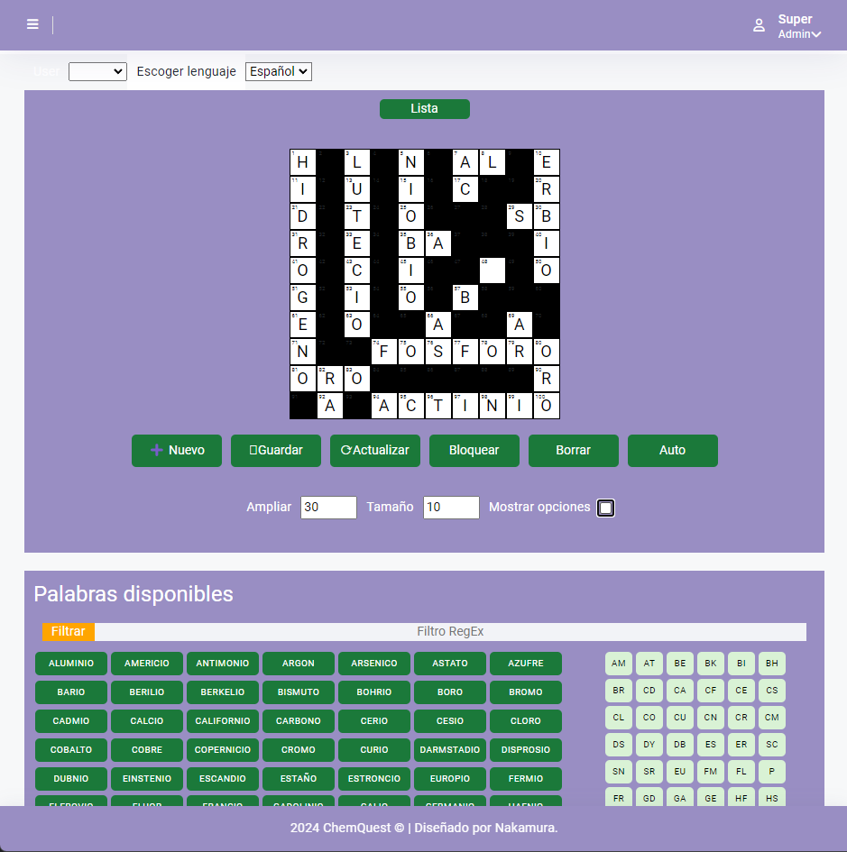
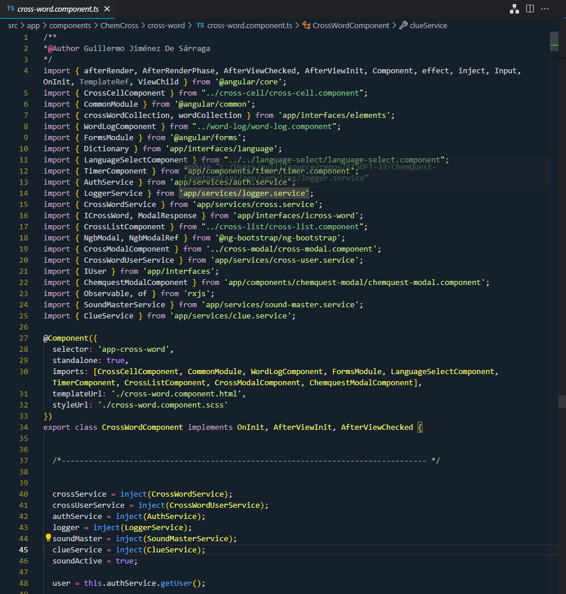

ChemCross
ChemCross es un juego educativo interactivo que combina la diversión de los crucigramas con el aprendizaje de los elementos químicos de la tabla periódica. Diseñado para estudiantes y entusiastas de la química, ChemCross ofrece una manera única y entretenida de reforzar el conocimiento de los símbolos, nombres y propiedades de los elementos químicos. El juego presenta una interfaz intuitiva y atractiva, desarrollada con Angular 17, JavaScript, HTML, y CSS, que permite a los usuarios completar crucigramas personalizados mientras exploran las complejidades de la tabla periódica.

En el backend, ChemCross utiliza MariaDB para gestionar la base de datos, almacenando información sobre los elementos, pistas y las respuestas correctas, así como el progreso de los jugadores. Lanzado en 2024, el proyecto refleja un enfoque moderno y dinámico en la educación científica, proporcionando una herramienta interactiva que no solo desafía a los jugadores, sino que también los ayuda a consolidar su conocimiento en un ambiente de aprendizaje divertido y accesible.
